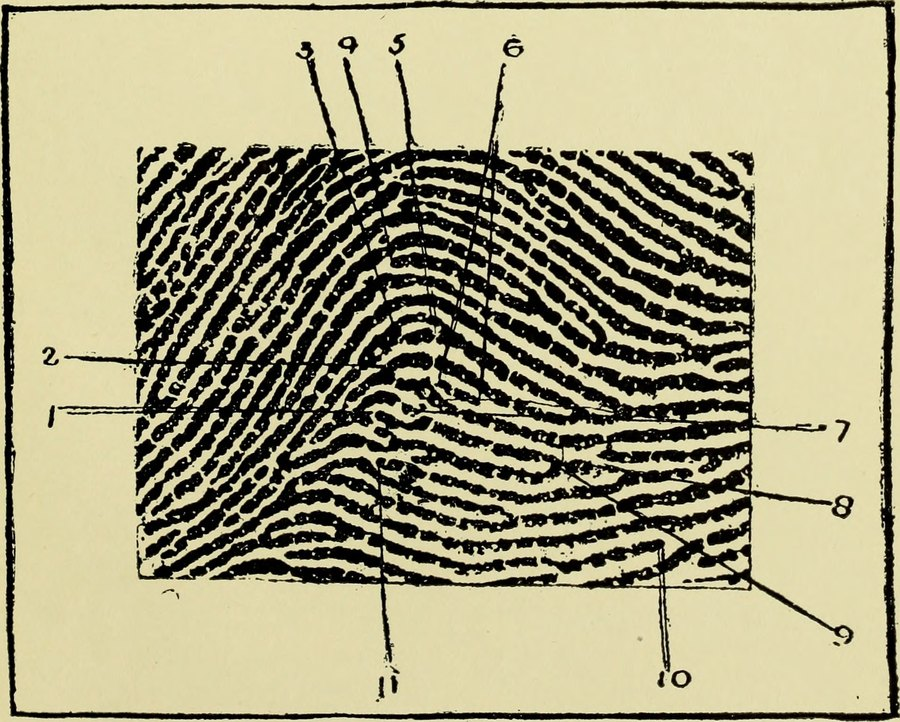
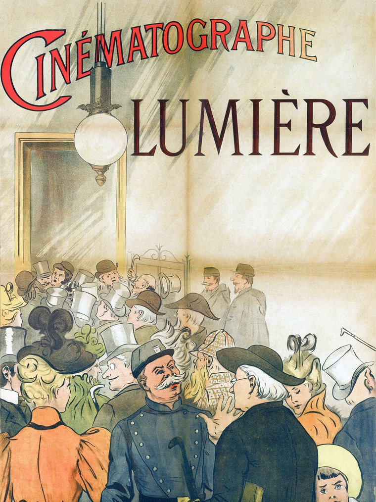
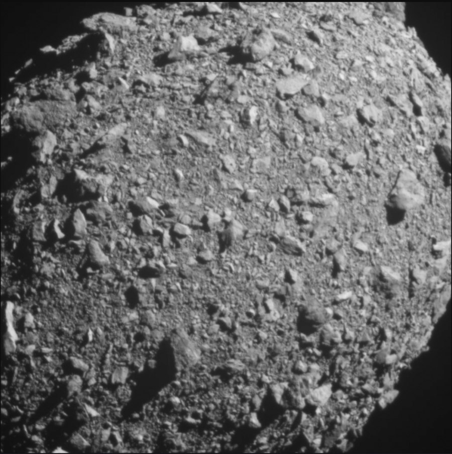
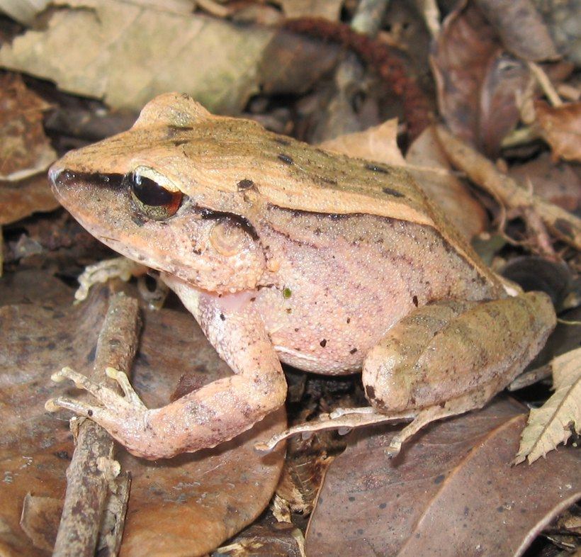

Москва · средаВыпуск из Москвы и из-под землиЦена: бесплатно
TheSéance Times
газета для тех, кто разговаривает с прошлым
№ 008 · 4 ноября 2026Восьмой выпускЧтение: 14 минут
Машина · главное
Кто именно ответил
Когда вы посылаете запрос не напрямую в лабораторию, а через посредника, подпись «это Claude» ставит посредник. Anthropic в понедельник выложила открытый прототип того, как эту подпись можно проверить: криптографическое доказательство, что каждый токен выдала именно заявленная модель. Дорого, медленно, но впервые — проверяемо.
Событие — 2 ноября 2026 · Anthropic, TechCrunch · 6 минут
В исследовательской публикации это названо без обиняков. Пользователь, который обращается к модели, не может убедиться, что ответ пришёл от той модели, которую он выбрал, — а не от «того, кого тайно подставил маршрутизирующий сервис, чтобы сэкономить», и не от того, «кто вклинился в поток токенов». Оценивать по качеству ответа бессмысленно: хороший текст умеет выдавать и дешёвая модель, и подделка.
Способ, который предлагают, называется доказуемым выводом (provable inference). Лаборатория публикует «отпечаток» модели — обязательство, из которого нельзя восстановить веса, — и к каждому ответу прикладывает короткое доказательство. Доказательство строится на zkSNARK, разновидности криптографического аргумента с нулевым разглашением: оно убеждает проверяющего, что вычисление выполнено правильно, но ничего не говорит о самих числах. Проверка идёт на обычном процессоре за секунды, потому что доказательство в тысячи раз короче работы.

Одиннадцать деталей вместо обещания: таблица из «Guide to Finger-Print Identification» (1905) — увеличенный отпечаток с разметкой частных признаков узора, по которым опознают человека. Дактилоскопия тоже начиналась как способ доказать, что перед вами именно тот, за кого он себя выдаёт. Общественное достояние, Wikimedia Commons.
Цифры, ради которых стоит читать отчёт. Испытание шло на Llama 4 Maverick — mixture-of-experts на 400 миллиардов параметров, из которых на каждый токен работают около 17 миллиардов, в 4-битном квантовании. Один H100 с 24 ядрами CPU выдаёт доказательства со скоростью около 110 токенов в секунду, а каждое доказательство весит примерно 19 мегабайт на окно в 1 024 токена. Для сравнения: нативная работа той же модели на vLLM заняла бы в 70–95 раз меньше времени. Пересчитаем в понятное: тысяча токенов ответа — это около девяти секунд работы H100 и почти 19 мегабайт доказательства рядом с текстом.
Прежний рекорд для той же модели — не абстрактный: система VerInf доказывала Llama 4 Maverick со скоростью 0,02 токена в секунду, то есть 1 000 токенов за 14,3 часа на DGX Spark, и выдавала доказательство на 93,6 гигабайта, проверка которого занимала почти сутки. Отсюда и осторожный оптимизм авторов: издержки упали примерно на два порядка, и это меняет представление о том, что вообще возможно доказать. Коммерческая Attestable, по их данным, уже делает 53–77 доказательств в секунду на плотной модели на 31 миллиард параметров — но открытого кода не публикует.
Дальше начинается честная часть, которую в пересказах обычно теряют. Доказательство утверждает, что каждый проверенный токен — жадный выбор целочисленной версии опубликованных весов. Ответ с плавающей точкой или с сэмплированием может в каком-то месте разойтись с доказанным вычислением: для обычных запросов расхождение мало, но для специально составленных подсказок это дыра. Система предполагает mixture-of-experts и не скрывает архитектуру — только веса. Доказательства строятся постфактум, а не в реальном времени, со всеми следствиями: задержка, повторный счёт, недетерминизм. И главное: авторы прямо пишут, что не гарантируют совпадения трёх своих артефактов — Lean-модели, статьи и быстрого кода. Развёртывания нет ни у Anthropic, ни у кого-либо ещё.
Что выложеноПять артефактов: публикация, технический отчёт, спецификация протокола, работающий код (доказывающий и два проверяющих, один на C++, один на Lean) и Lean-доказательства верхнеуровневых утверждений. Лицензия Apache 2.0.
Кто делалFrontier Red Team: Рой Ринберг и Алекс Аллейн (Anthropic), Алессандро Кьеза (EPFL, StarkWare), Миранда Крайст (MIT, RESI), Рахул Далал, Джакомо Фенци, Бен Майер, Гай Вайсенберг (EPFL).
Цена проверки1 000 токенов ≈ 9 секунд одного H100 и ~18,6 МБ доказательства; проверка — секунды на процессоре.
Что дороже всегоПостфактум: доказательство нельзя приложить к стриму в реальном времени, его считают после, отдельным проходом.
Чего нетНи одного работающего сервиса, где можно проверить чужой ответ уже сегодня.
Что здесь факт, а что — обещание
Факт: публикация от 2 ноября, состав авторов, архитектура на zkSNARK, измеренные цифры на Llama 4 Maverick, лицензия Apache 2.0, наличие кода и Lean-доказательств — и весь список ограничений, который авторы приводят сами. Факт и то, что они называют подмену модели маршрутизатором явной угрозой.
Не факт: что этим можно пользоваться. Это прототип без развёртывания, с доказательством только для целочисленной модели при жадном декодировании и без гарантии, что Lean-модель, статья и код совпадают между собой. Не факт и другое: что ваш посредник вас обманывает. Ни одного случая подмены модели в конкретном сервисе мы не приводим — их у нас нет. Чего нет: цены такой проверки для провайдера, а без неё непонятно, кто за неё заплатит: вы или он.
Пока отпечаток не опубликован, имя модели в ответе API — это не подпись, а визитка: её печатает тот, кто продаёт.
Редакционный вывод
Что из этого следует практически, для того кто платит за токены сам. Первое: считать имя модели в ответе заявлением, а не фактом, — и хранить сам ответ вместе с метаданными провайдера, потому что через месяц спорить будет не о чем. Второе: держать один эталонный запрос с известным ответом и прогонять его после каждой смены маршрута или тарифа — это дешёвая проверка на подмену, которая не требует криптографии. Третье: смотреть, что провайдер пишет про версию модели: «latest» и «auto» — это не версия, а обещание. Четвёртое: если у провайдера есть страница статусов и changelog моделей — это единственный публичный след того, что он вообще различает модели между собой.
И самое интересное в этой истории — не скорость доказательств. Индустрия впервые признала, что вопрос «какая модель мне ответила» имеет смысл и что ответ на него должен быть математическим, а не репутационным. Пока это признание живёт в исследовательском посте под Apache 2.0, но у него есть цена: как только провайдер начнёт публиковать отпечатки, дешёвая подмена перестанет быть невидимой. Для рынка, где разница между старшей и младшей моделью — десятки раз в счёте, это не мелочь.
Кино
Второй материал · 5 минут
Двадцать минут без склейки
Оператор Тудор Владимир Пандуру разобрал в Джакарте, как снимаются фильмы Кристиана Мунджиу: одна сцена — один план, без монтажных склеек, по двадцать-сорок дублей. Дневную сцену «R.M.N.» снимали ночью, а вместо монтажёра работал фокус-пуллер.
Репортаж — 4 ноября 2026 · Variety · 5 минут

Кино начиналось с одного плана: плакат «Cinématographe Lumière», Анри Бриспо, 1895 год. Аппарат Люмьера снимал один непрерывный кусок до конца кассеты, и склеивать было нечего — монтаж как искусство появился позже. Общественное достояние, Wikimedia Commons.
Мастер-класс вёл Бен Зейтлин, номинант на «Оскар» за «Beasts of the Southern Wild», и начал с признания, что надеется когда-нибудь поработать с Пандуру. Тот прошёл школу у Олега Муту, постоянного оператора Мунджиу, и познакомился с режиссёром ещё стажёром; «Выпускной» стал его второй картиной в этой роли и первой, после которой его узнали за пределами Румынии. Дальше — «R.M.N.», «Fjord» и «Торт президента» иракца Хасана Хади.
Дальше — метод, изложенный почти протокольно. В фильмах Мунджиу камера обычно снимает plan-séquence: одна сцена на один план, монтажа нет, склеек нет. «С точки зрения оператора это довольно трудно, потому что мы снимаем много дублей, и главным на площадке становится исполнение, — сказал Пандуру. — Иногда мы делаем двадцать, тридцать, сорок дублей, чтобы добиться лучшего результата». Камера при этом держится в стороне и не подсказывает зрителю, на что смотреть: он, по словам оператора, «достаточно умён, чтобы понять, что там происходит».
Самый наглядный пример из разбора — сцена в мэрии в «R.M.N.»: двадцать минут, больше ста человек в кадре. Свет в этой дневной сцене, признался Пандуру, снимали ночью. А самое трудное было не в свете: удержать в фокусе сотню людей, не двигая камеру. «Фактически вы используете перевод фокуса как способ монтажа и одновременно как перекадрирование внутри одного плана», — сформулировал он. То есть склейка не исчезла — она переехала в кольцо фокуса.
В «Fjord» тот же принцип применён к свету. Первый показанный фрагмент — семейное застолье, снятое как будто в «магический час», на границе заката; Пандуру объяснил, что свет снаружи перекрывали, чтобы выиграть время для актёров, — иначе натура ушла бы раньше, чем сцена. Финальный длинный план ведёт камеру за Ренате Рейнсве: от поисков на земле до прыжка в море. Мунджиу не стал резать именно потому, что ему была нужна вся дуга — «вся эмоциональная траектория персонажа в одном движении».
МетодPlan-séquence: одна сцена — один план, без монтажных склеек; камера не направляет внимание зрителя.
Дубли20, 30, порой 40 дублей на сцену — по словам Пандуру.
«R.M.N.»План на 20 минут с более чем 100 людьми в мэрии; дневную сцену снимали ночью; фокус вместо склейки.
«Fjord»Застолье на «магическом часе» с перекрытым внешним светом; финальный план — за Ренате Рейнсве до прыжка в воду.
Кто вёлБен Зейтлин; мастер-класс прошёл на фестивале Jakarta World Cinema, открывшемся картиной «Fjord».
Почему это стоит читать в один день с главным материалом. Склейка — это способ спрятать: убрать провал в игре, сжать время, подменить одно другим. Длинный план ничего не прячет, он тратит ресурс на глазах у зрителя: двадцать минут, сто человек, сорок дублей — и всё это ради того, чтобы вы поверили одному непрерывному куску. Доказательство, о котором речь в первой заметке, устроено так же: оно не улучшает ответ, оно позволяет увидеть всю операцию целиком и проверить, что подмены не было. Искусство без склейки и протокол без подмены — одно и то же усилие, только в разных цехах.
Деньги
Энергия · 3 ноября
Реактивный генератор за 24 месяца
TechCrunch · 3 ноября 2026
Дата-центры под ИИ начали покупать списанные авиационные двигатели и переделывать их под природный газ — потому что очередь за электричеством длиннее, чем терпение инвесторов. Об этом во вторник написала The New York Times, TechCrunch пересказал цифры. Логика простая: подключить 100 мегаватт к сети в Северной Вирджинии — примерно семь лет по оценке Международного энергетического агентства, а с реактивной установкой дата-центр, по словам аналитика Rystad Energy Аудуна Мартинсена, «заработает через 24 месяца».
Список уже не гипотетический. xAI Илона Маска поставила восемь переделанных турбин в Миссисипи для дата-центра Colossus 2 в Мемфисе — это видно по разрешениям штата и спутниковым снимкам. Установки делает ProEnergy, которая восстанавливает двигатель GE, обычный для «Боингов». Crusoe, строящая площадку Stargate в Абилене, заказала тринадцать таких установок в апреле; в сентябре она отказалась от сделки на 1,25 миллиарда долларов о покупке 29 газовых турбин у Boom Supersonic — компании, которая делает сверхзвуковой пассажирский самолёт и заодно продаёт его двигатель как электростанцию.
Сеть100 МВт в Северной Вирджинии — около семи лет (IEA); большая часть новых мощностей ожидается только к 2031 году.
РеактивДата-центр на переделанных двигателях запускается примерно за 24 месяца.
Кто ужеxAI — восемь установок в Миссисипи; Crusoe — тринадцать установок для Абилена.
МинусыМеньше КПД, больше выбросов, установок нужно больше на тот же мегаватт — по данным NYT.
Практический смысл для счёта за токены простой. Цена инференса держится не только на видеокартах: она держится на очереди за электричеством, и эта очередь измеряется годами. Всё, что сокращает ожидание, снижает конечную цену — но за счёт эффективности и экологии, то есть за счёт будущего счёта, который пока не выставлен. Пока одни спорят, лопнет ли пузырь, другие покупают двигатели с «Боингов»: когда вместо финансового пузыря у вас на площадке стоит турбина, пузырю труднее лопнуть — у него есть выхлоп.
Инструментарий
Правила · 3 ноября
Обязательная подпись под модом
The Verge · 3 ноября 2026
Крупнейший в PC-играх склад модификаций Nexus Mods сделал раскрытие ИИ обязательным: автор нового мода должен прямо указать, «использовался ли ИИ в его работе». Тег «сделан с помощью ИИ» требует теперь ещё и публичного объяснения — как и где именно ИИ применялся, — а сами метки станут заметнее на страницах. Об этом объявил владелец сайта Виктор «Foledinho» Фолманн.
Запрета при этом нет, и это главное в решении. Сайт называет себя «за человеческое творчество», но прямой блокировки ИИ-модов не вводит; зато обещает не обучать ИИ на модах и не продавать и не лицензировать их тем, кто это делает. На обновление уже выложенных модов дали 60 дней — до 2 января, после чего правила начнут применяться. Заодно меняют ленту новинок: ограничат число модов от одного автора в выдаче и ужесточат правила для новых аккаунтов, а ещё добавят настройки, чтобы скрывать ИИ-контент на страницах игр и на главной.
Что обязательноДекларация об использовании ИИ при загрузке нового мода; для «ИИ-ассистированных» — публичное объяснение.
Срок60 дней на приведение старых модов в соответствие; дедлайн — 2 января.
Запрета нетИИ-моды разрешены, но помечены; обучение ИИ на модах и их перепродажа — нет.
Это тот же спор, что идёт в судах, только решённый административно и заранее: не «пускать или не пускать», а «подписывать». Для того, кто выкладывает тексты сам, вывод скучный и полезный: маркировка становится нормой раньше, чем закон. Читатель всё меньше верит в отсутствие подписи и всё больше — в подпись честную. Мод без метки «сделан с ИИ» теперь читается не как «сделан человеком», а как «автор не сказал».
Небо
Астероиды · 3 ноября
Пиксель по имени Диморф
ESA · 3 ноября 2026
Аппарат Европейского космического агентства Hera впервые увидел пару астероидов Дидим и Диморф как два отдельных объекта, а не как одну светящуюся точку. Снимок сделан вечером 18 октября чёрно-белой камерой AFC с расстояния около 1 280 километров; до Земли в этот момент было 197 миллионов километров. «Диморф виден впервые, — говорит Майкл Кюпперс. — Раньше аппарат различал систему Дидима как одну точку. Теперь Диморф, занимающий в этом снимке около одного пикселя, ясно отделён от родительского тела».
Цифры, которые стоит держать в голове. Диморф — примерно 151 метр в поперечнике, размером с пирамиду Хеопса; Дидим — около 780 метров, чуть ниже башни Бурдж-Халифа. Диморф обращается вокруг Дидима на среднем расстоянии всего 1,15 километра со скоростью около 18 сантиметров в секунду. Чтобы подойти к паре, аппарат дважды включал двигатели с неделей между включениями и сбросил скорость относительно астероидов до 20 метров в секунду.

Диморф за три секунды до удара: снимок зонда DART 26 сентября 2022 года. Именно эту «груду щебня» Hera будет изучать, чтобы понять, почему орбита сдвинулась сильнее, чем предсказывали модели. NASA/Johns Hopkins APL, общественное достояние.
Что было26 сентября 2022 года DART врезался в Диморф на скорости около 6,1 км/с; обломки разлетелись на 10 000 км, период обращения сократился примерно на 33 минуты.
ЗагадкаСдвиг орбиты оказался заметно больше, чем предсказывали расчёты; остался ли кратер и изменилась ли форма астероида — неизвестно.
Что дальшеПервые детальные снимки Диморфа — 25 ноября; затем два кубсата размером с обувную коробку и, возможно, посадка.
Смысл всей затеи — не в кратере. Кинетический удар признан рабочим способом сдвинуть опасный астероид только наполовину: удар мы умеем, а предсказывать последствия — пока нет. Пока сдвиг в 33 минуты не объяснён физически, «отвести астероид» остаётся фразой из пресс-релиза. Hera летит ровно за этим объяснением, и до 25 ноября у неё в запасе один пиксель Диморфа — что для газеты о разговорах с прошлым почти неприлично символично: сначала вам отвечает точка, потом — мир.
Тело
Зоология · 2 ноября
Холодное дело лягушек Борасеи
ScienceDaily · 2 ноября 2026
Почти пятьдесят лет учёные не могли объяснить, почему в атлантическом лесу Бразилии начали исчезать лягушки. На станции Борасея, одном из самых богатых амфибиями мест планеты, популяции обвалились между 1979 и 1982 годами, и причину тогда установить не удалось. Ответ, как это обычно и бывает в холодных делах, нашёлся в архиве: исследователи взяли лягушек, собранных десятилетия назад и хранящихся в музейных коллекциях, и посмотрели, когда в них появился грибок.
Выборка — больше 370 сохранённых амфибий из музейных фондов, 17 видов. Ни у одного экземпляра, собранного до 1979 года, следов хитридиомикоза нет; среди собранных в 1980-х положительных больше половины. Хитридиомикоз — болезнь, которую вызывает грибок Batrachochytrium dendrobatidis; считается, что он пришёл из Азии и распространился по миру в 1970–1980-х, но описали его только в 1999 году, когда сотни видов уже были на грани исчезновения.

Haddadus binotatus — один из видов, переживших вспышку в атлантическом лесу Бразилии. Фото: Фелипе Гомес, CC BY-SA 2.5, Wikimedia Commons.
ГдеБиологическая станция Борасея, атлантический лес Бразилии; обвал популяций — 1979–1982 годы.
МатериалБолее 370 музейных экземпляров, 17 видов; до 1979 года заражённых нет, в 1980-х — больше половины.
ПарадоксУ видов с самым сильным обвалом следов инфекции почти нет: они гибли быстрее, чем их успевали собрать.
Кто вёлДжек Бойетт, Смитсоновский национальный зоопарк и Принстонский университет.
И вторая половина истории — про выживание. Грибок никуда не делся, заражения есть и сейчас, но многие популяции восстановились: похоже, у видов выработалась терпимость к болезни за несколько поколений. Осторожность обязательна: выводы касаются одной станции и не объясняют автоматически исчезновения по всему лесу. Но метод стоит запомнить отдельно — ответ на вопрос «что случилось сорок лет назад» лежал не в поле, а в шкафу с формалином. Иногда архив точнее прибора.
Книги
Биография · 3 ноября
Толкин, который видел Бога везде
Literary Hub · 3 ноября 2026
В новой биографии «The King Under the Mountain: In Search of J.R.R. Tolkien» Д. Дж. Тейлор начинает с сильного сравнения: спрашивать, что Толкин думал о Боге, — то же, что спрашивать, что Маркс думал о социализме. Религия не была для него темой, она была средой: «Толкин, если честно, видел Бога везде — в мельчайших деталях быта и в пейзажах за окном, в отношениях, в надеждах и снах и, прежде всего, в своём искусстве».
Ключевой документ здесь — письмо иезуиту Роберту Мюррею, написанное незадолго до выхода «Властелина колец». Толкин называет книгу «в основе религиозной и католической работой — бессознательно поначалу, но сознательно при правке». Сознательность означала вычёркивание: он убирал из рукописи всё, что могло читаться как отсылка к конкретной системе веры в Средиземье, и позволял религиозному началу «раствориться в истории и символике».
КнигаД. Дж. Тейлор, «The King Under the Mountain: In Search of J.R.R. Tolkien», Pegasus Books, 2026; отрывок — Literary Hub, 3 ноября.
АвторБиограф и критик, за книгу об Оруэлле получил премию Уитбреда; в шорт-листе Букера — «Derby Day».
Цитата«A fundamentally religious and Catholic work, unconsciously so at first, but consciously so in the revision» — письмо Роберту Мюррею.
Цена верыМать Толкина, Мейбл, умерла молодой — во многом из-за бедности после перехода в католичество; Эдит пришлось принять католичество до брака.
Практический вывод для пишущего — не про Толкина, а про приём. Бог в тексте работает только там, где его не видно: как только он появляется как объяснение сюжета, повествование получает индульгенцию и перестаёт держать удар. Тейлор формулирует это через Гэндальфа: его можно читать и как волшебника в выдуманном мире, и как волю Провидения — выбор за читателем, и любой из двух не портит книги. Это, если угодно, тоже доказательство без склейки: автор не подсказывает, он выкладывает сцену целиком и уходит.